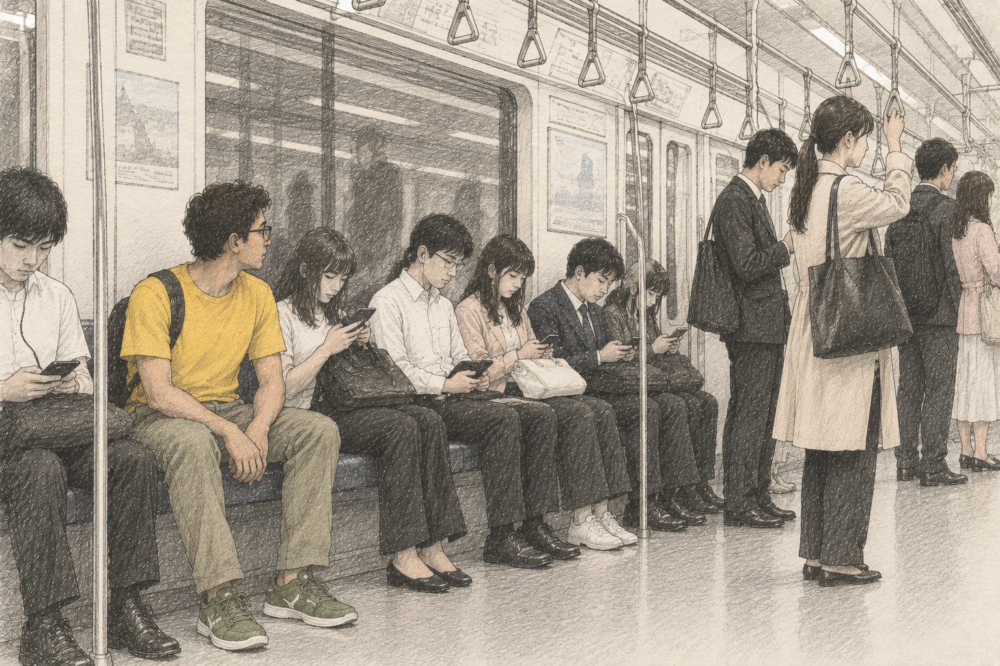

Japanese sense of colour is very unique and stylish. I still remember when I first entered the train from Shiodome to Roppongi.
Everyone, I mean every single person, inside the cabin was wearing black and white/light grey colour, while I was wearing a yellow t-shirt with off-green sneakers.
Damn !!, I should have taken a snap of those who glared at me.
I felt really like an alien — not the gaijin kind.
No wonder they see us differently.
Japanese people in Tokyo mostly wear similarly colored clothes — black, white, light pink, and at most dark blue — and you can sense the change in season just by looking at their dress colors.
The shift toward light pink starts just a few hours before the sakura actually blooms. They even know the exact day it will bloom.
Turns out this isn’t some random minimalist trend — it goes back to centuries , to actual laws.
During the Edo period, the shogunate banned commoners and merchants from wearing bright colors, gold, or fine silk, restricting them to browns, greys and navy.
People converted this restriction into an art form of near varieties with the colors, “iki” — a wholesome aesthetic built around subtle, restrained elegance.They got so good at working withing grey and brown that they invented “shijūhatcha hyakunezumi" — forty-eight browns and a hundred greys — an entire private vocabulary of near-invisible color differences.
There is a warm grace in this trend. No one actually cares about the cost of the clothes they wear. No one is really concerned about trends or the changes fashion goes through. The brand, the pattern, and the style mostly match.
Work and efficiency are what get noticed, not the age-old game of who wears what. Yes, there are places like Shinjuku where world fashion trends are born, but that isn't the norm.
I got so interested in this dressing pattern that I now wear only white t-shirts, mostly. Who needs to worry about trends and color shades anymore?